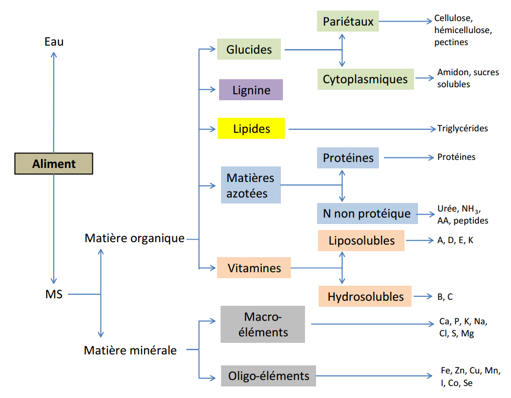

Chapitre 2 Rappels sur les aliments
Les aliments peuvent être classés selon les nutriments principaux qui les composent et qu’ils apportent dans la ration à savoir ceux qui fournissent l’énergie, les sources de protéines, de calcium, de phosphore, les autres macroéléments, les oligo-éléments et les vitamines.
2.1 Les sources d’énergie
Les céréales sont généralement la principale source d’énergie des provendes. Le maïs est plus énergétique que le mil, le sorgho ou le blé. Les farines basses de riz et de blé (les remoulages) ont également une bonne valeur énergétique.
Les sons ont une teneur (concentration) moyenne en énergie, mais sont indispensables pour régulariser le transit digestif chez la volaille.
Les huiles végétales et les graisses animales constituent quant à elles, des sources d’énergie pratiquement pure et sont utilisées dans les régimes nécessitant une valeur énergétique élevée.
2.2 Les sources de protéines
Les tourteaux (résidus d’extraction d’huile: soya, arachide, coton, palmiste, etc.) apportent la majorité des protéines de la ration. La farine de poisson est une excellente source de protéines riche en lysine et en méthionine.
La lysine et la méthionine de synthèse sont généralement incorporées aux mélanges pour satisfaire les besoins en ces deux acides aminés essentiels qui sont généralement trop peu présents dans les matières premières.
2.3 Les sources de calcium et de phosphore
La craie (carbonate de calcium), les phosphores, les coquillages broyés, les coquilles d’huîtres et les poudres d’os sont utilisées. Les concentrés minéraux du commerce apportent également ces éléments en quantités variables.
2.4 Les autres macroéléments, les oligo-éléments et les vitamines
Les concentrés minéraux-vitamines (CMV) du commerce sont la principale source de ces différents éléments, et sont généralement incorporés à des doses qui varient entre 0,5 et 5% de la ration.
2.5 Compositon des aliments
Les aliments distribués aux bovins, simples ou mélangés, sont composés d’eau et de divers nutriments (glucides, lipides, matières azotées, vitamines et minéraux) ainsi que des substances totalement dépourvues de valeur nutritive telle que la lignine.
Le nutriment est une substance chimique contenue telle quelle dans les aliments ou provenant de leur digestion, et que les cellules utilisent directement dans leur métabolisme.
Lorsqu’on place un aliment dans une étuve, l’eau contenue dans l’aliment s’évapore et le résidu sec est appelé matière sèche (MS).
Tous les aliments contiennent une certaine fraction (proportion) de MS. La teneur en MS de l’herbe est de l’ordre de 20%, alors que celles du foin et des céréales se situent entre 85 et 90%.
La MS comprend la matière organique (caractérisée par la présence d’atomes de carbone) et la matière minérale. La matière organique renferme les glucides, la lignine, les lipides, les matières azotées et les vitamines.
La matière minérale renferme quant à elle les minéraux.
L’organigramme ci-après (Figure 2.1) présente la composition des aliments selon Brocard et al. (2010).

Figure 2.1 Composition des aliments (Brocard et al., 2010).